* Parts of this Text were directly taken and tweaked from Botman's
explanations *
(Lazyness took me again and Botman is better than me in explaining
things)
* V1.2 Waypoint Makers please read:
If you previously did some waypoints for POD-Bot you will
notice some
differences. First, you are now allowed to have connections between
8 Waypoints at the same time (was 4 before). Also the Wayzone Radius
gets calculated instantly now when placing a waypoint (makes "wayzone
calcall" somewhat obsolete). And even more important you should
now do
lots of waypoints since the Bots will try to to vary them. Also try
to
place waypoints at Places where you would like them to take cover (see
below for a more lengthy explanation).
First, before starting to do waypoints because you desperately
need them for a custom map you want to play you better check here if
they weren't already done by someone else:
http://www.nuclearbox.com/podbot/downloads.shtml
1. Waypoints, what are they ?
Waypoints are locations in the maps that the bots will
use when navigating.
They allow the bot to roam about the map without having to blindly bump
into
walls. Waypoints can be thought of like the bread crumbs in the Hansel
and
Gretel story. They are something marking a path to make it easier to
follow.
The waypoints are not displayed while the game is being played. The
bots
"know" which way to go by following the path laid out by these
waypoints.
In order to get the bots to cover the entire map when
playing the game,
waypoints should be laid out all over the map. Without the waypoints
the
bots will just randomly run around and will tend to stay in the same
area.
Waypoints also allow the bot to know where specific goals are in the
game.
You couldn't play capture the flag unless you knew where the flag was
and
where the flag needed to be taken after being captured. Waypoints are
what
makes all of these things possible. Bots with sufficiently advanced
waypoint
information and algorithms would be able to find the shortest distance
between points in the map and navigate from their current position to
some
goal on the other side of the map.
This document describes the commands needed to create
or edit a waypoint
file (to be used with POD-Bot). When creating or editing a waypoint
file it is best NOT to have any bots wandering around at the
same time.
Create a LAN game, and join the game then start laying out waypoints
for
a map. Save the waypoint file, disconnect from the server, then start
the
game again, this time with the bots to see how well (or poorly) they
follow
the waypoints you have created.
2. What do waypoints look like in the map ?
The waypoints are displayed using vertical lines that
look like lightning or
electric streams. The vertical line used to draw the waypoint is the
same
height as the player. The point in space at the center of this vertical
line
is what is actually used as the waypoint. Different Types of waypoints
have
different colors.
Waypoints are stored in a file with the same name as the
map file name but
using the extension ".pwf" instead of the map file
extension of ".bsp". For
example, the waypoint file for the map de_dust would be de_dust.pwf.It
will be
stored in the Half-Life\cstrike\PODBot folder and then in the folder
you specified
with wptfolder (defaults to "WPTDefault").
Waypoint files are automatically loaded when the map is loaded (if they
exist). If the waypoint file does not exist, you will need to create
it
using the directions contained in this document.
3. Waypoint console commands Summary
The following Waypoint commands are available (note these
ARE case sensitive):
"waypoint on" - Turns on displaying of
waypoints.
"waypoint on noclip" - Turns on waypoint editing with
noclip cheat. This allows you
to fly and you don't collide with walls. Useful for doing swim waypoints.
"waypoint off" - Turns off displaying of all waypoints.
"waypoint add" - Adds a waypoint at the current player
location. A Menu will pop
up where you have to select the different types of waypoints
"waypoint delete" - Deletes the waypoint nearest to
the player (see below).
"waypoint find x" - Shows you the Direction to a specific
Waypoint Nr. x
"waypoint showflags" - Shows all of the Flags which
are set manually on this waypoint
"waypoint addflag" - Allows you to manually add Flags
to a waypoint.
"waypoint delflag" - Let's you select a waypoint flag
to delete
"waypoint setradius x" - Manually sets the Wayzone
Radius for this waypoint to
Value x
"waypoint stats" - Shows the number of different waypoints
you did already set.
"waypoint check" - Checks if all Waypoints are valid
(automatically done when saving them too)
"wayzone calcall" - Calculates the Wayzone Radius for
all Waypoints in the Map. (obsolete now since V1.3 because wayzones
are automatically set when a waypoint is created)
"waypoint save" - Saves the current waypoint list to
a file (with Waypoint & Path Checking)
"waypoint save nocheck" - Same as above but forcing
tosave even if they are full of errors..
"waypoint load" - Loads the waypoint list from a waypoint
file (and initialises all Datas).
"autowaypoint" - Displays the status of the autowaypoint
setting.
"autowaypoint on" - Turns on autowaypoint setting.
"autowaypoint off" - Turns off autowaypoint setting.
"pathwaypoint" - Displays the status
of the pathwaypoint setting.
"pathwaypoint on" - Turns on the pathwaypoint setting
(see below).
"pathwaypoint off" - Turns off the pathwaypoint setting.
"pathwaypoint add x" - Connects the nearest Waypoint
to you, with the
waypoint whose number specified with Value x.
"pathwaypoint delete x" - Disconnects the nearest Waypoint
to you, with the
waypoint whose number specified with Value x.
"debuggoal x" - Forces Bots to use Waypoint
Nr. x as a Destination Waypoint
To use the waypoint commands, you will have to use the console. You
must
start the game with the console option enabled (use "hl.exe
-console" in
the Target: line of a shortcut or use "Half-Life Console"
in your SIERRA
menu from the Windows Start button). Use the '~' key to bring down the
console. Enter the console commands that you wish, then use the '~'
key
again to return to the game.
You can make things easier by binding console commands
to keys on the
keyboard. Just type "bind" followed by the key you want to
bind to,
followed by the console command. You will have to use double quotes
on the console command if it's more than one word. Here's an example
of console commands that I use when editing waypoints...
bind a "waypoint add"
bind d "waypoint delete"
bind l "waypoint load"
bind w "waypoint save"
The 'a' key will manually add a waypoint. The 'd' key
will delete a waypoint.
The 'l' key will load the most recently saved waypoint file (useful
if you
have added some waypoints but don't want to save them and want to go
back to
the previously save waypoint list, sort of like an "undo").
The 'w' key (for
"write waypoints") will save the list of waypoints to the
waypoint file. I
tried using 's' (for "save waypoints"), but I kept hitting
's' by mistake when
I wanted to add or delete a waypoint.
Using "waypoint add" will place a waypoint
at the location that the player is
currently at in a map. Waypoints can be placed anywhere the player can
go.
When placing a waypoint, you will hear a sound to indicate that the
waypoint has been dropped (the sound is the same sound the crossbow
bolt makes when striking an wall).
You then have to specify the Type of waypoint you want to place here.
"Normal Waypoint" sets a Waypoint which
is used for normal walking from one
point to each other. From V1.4 on you should place lots of them (but
still caring for some distance between them), since the
Bots use them for hiding and varying their paths. Color is green.
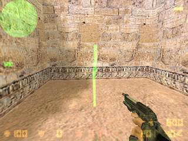
A Standard Normal Waypoint
"Terrorist Important Waypoint" and "Counter
Important Waypoint"
These are strategical waypoints for that team. Bots use these waypoints
to patrol the map. How they use this, heavily depends on the map type.
In a DE Map you should place a lot of Counter Waypoints around the
Bomb Plant Zone and only 2 or 3 strategical waypoints for Terrorists.
On a DE Map Counter Bots will most of the time pick a Counter Waypoint
as
a destination and only sometimes pick a Terrorist waypoint. Terrorists
are allowed to pick any of them as a goal waypoint. This behaviour changes
with the maptype, in a CS map for example it is vice versa.
It helps to think of the important waypoints like strategical positions
in a sports game. Imagine the team which defends the Map Goal is the
'Home Team' and the other one is the 'Away Team'. Now you need to have
more important waypoints for the Home Team, because the Away Team will
go for them anyway. On a DE Map the CT Team is the Home Team, on a CS
& AS Map the Terrorist Team is the Home Team. The average number
of 'Home Team' Important Waypoints should be about twice as much as
the the important waypoints for the 'Away Team'. Terrorists WP Color
is red, Counter Waypoints
are blue.
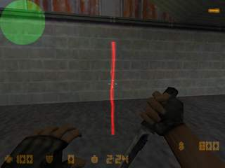
A Terrorist Important Waypoint
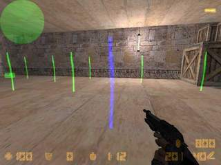
A Counter-Terrorist Important Waypoint
"Ladder Waypoint"
These need to be placed on a ladder if you want the Bots to climb it.
Set the bottom waypoint at a position where you're already "stuck"
to the
ladder. At the top of the ladder you should place another ladder waypoint.
Set this at a position where you can hardly look ever the edge. If the
ladder
is quite a long one, you might want to place another ladder waypoint
in
between the other ones. In most cases you need to connect the waypoints
manually by using pathwaypoint (see below). If there is no connection
between the waypoints the Bots won't climb the ladder ! Color is purple.
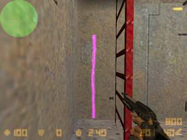
A ladder waypoint
"Rescue Waypoint"
This is only needed on Hostage Maps. It's the location where you want
the CT Bots to rescue the hostages. Usually only 1 is needed (depending
on how much Rescue Zones there are it might be more).. Color is white.
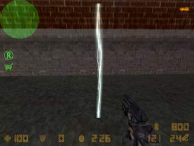
A Rescue Waypoint
"Goal Waypoint"
Place this at a position where Goals of the Map need to be achieved.
In DE
maps this is a bomb plant spot and on cs maps Counter look here to rescue
some hostages. In AS maps these are the Escape points for the VIP. Color
is
purple like ladder waypoints.
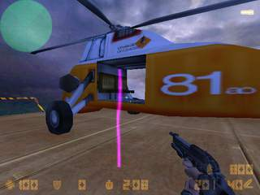
A Goal Waypoint
"Campstart Waypoint"
This is a camping (or sniper if you prefer) waypoint. To place it, look
into
the direction you want the Bot to start looking at when camping. To
let him
crouch at that position just press the duck button while adding it.
You also
need to specify the:
"Campend Waypoint"
Selecting this will set the end direction for the Bot to look at when
camping.
Look straight into the direction where you want the Bot to look and
select it.
Note: you can't set a campend waypoint before doing a campstart waypoint.
Normal Color is cyan, if you made it team specific it will have a touch
of red
if Terrorist WPT or blue if CT.
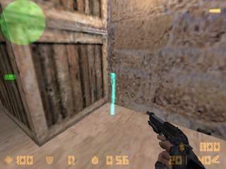
A Camp Waypoint where the Bot will duck while
camping
"Jump Waypoint"
This is the very first of the upcoming learning Features in POD
(I'm planning on extending this a lot). By selecting it, your moves
will be monitored and if you jump, a normal waypoint will be placed
at the position you started to jump and another will be placed where
you landed. The Waypoint Type as said before is a standard waypoint
but a red connection line will show you that there is a jump connection
between the two. You can also create jump connections between already
existing waypoints, just make sure you're in the near of the first when
jumping and land in the near of the destination waypoint. Note that
this will adjust the waypoints origin on the average position of the
previous position and your jump position. You can even have the Bots
jump to a ladder or do several jumps after each other !
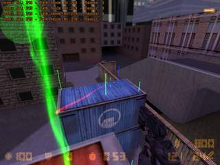
Waypoints connected with a Jump Connection
*NOTE*
To set a crouch waypoint, just keep holding your duck key. You
certainly
noticed, I don't have different paths for different teams. I removed
team
specific paths, since the Bots should be free (IMHO) to walk everywhere
and
I secretly hated to to do waypoints for every team.
Using "waypoint delete" will remove the waypoint closest
to the player. The
waypoint MUST be within 40 units from the player (about 1/2 the player
height)
in order to be removed. You will need to stand fairly close to the waypoint
to be able to remove it. This prevents you from accidentally removing
a
waypoint on the other side of the room. When removing a waypoint you
will
hear a sound indicating that the waypoint was removed (the same sound
the
tripmine makes when placed on a wall).
"waypoint addflag/deleteflag" gives you
some additional options for waypoints.
The first, "blockwithhostage" is rarely used. If you
set this flag on a
waypoint Bots won't take this waypoint if a hostage is following them.
With the other two, you can make a campwaypoint team-specific.
Using "waypoint save" will save the waypoint
data to the waypoint file. Before saving (if you didn't add the 'nocheck'
argument, the Waypoints and Paths will be checked for major mistakes
and if something is wrong you'll be told so and nothing will be saved.
During the checking time CS freezes and depending on the speed of your
computer it could easily last for a minute. Don't worry your computer
hasn't crashed !
Waypoint files will have the same name as the current map with an extension
of ".pwf". The file will be saved into the "cstrike/PODBot"
Folder. Your
current player name will be saved as the waypoint file creator.
Using "waypoint load" will clear out
all waypoints in the current map and
load them from the waypoint file in the maps folder. This is a good
way
to "undo" a bunch of waypoints that you have created but do
not wish to
save. There is no way to "undo" a single waypoint. You will
have to use
the "waypoint delete" command to remove waypoints one-by-one.
The "autowaypoint" command allows you to automatically
drop waypoints as
you run around in a map. To turn autowaypointing on use "autowaypoint
on".
As you run around the level waypoints will be dropped every 200 units
automatically. No waypoint will be dropped if another waypoint is already
within 200 units of your current position. So if you want to place lots
of waypoints fairly close together you may have to manually place some
of
the waypoints using the "waypoint add" command. Autowaypointing
keeps
track of where the last waypoint was dropped (either manually or from
autowaypointing) and will place another waypoint when you are 200 units
from the last waypoint. If you don't like where autowaypointing placed
a waypoint and want to move it a little bit, you can delete the waypoint
using "waypoint delete" (but turn off autowaypointing before,
since it
will place a new waypoint otherwise).
When using autowaypointing, try to stay in the center
of narrow hallways
and always place a waypoint on BOTH sides of a door. You may have to
place
some of these waypoints manually using "waypoint add"
since places like
intersections of hallways and doorway entrances and exits don't usually
fall exactly at the location where autowaypoint would want to place
a
waypoint.
Don't use autowaypointing for locations like ladders or jumps !
The "pathwaypoint" command allows you
to display what the bots would consider
to be a valid path from one waypoint to other waypoints. Turn pathwaypoint
on using "pathwaypoint on" and whenever you get close
to a waypoint
yellow or white lines will be drawn to all of the other waypoints that
the bot
would consider to be "reachable". If the connection is a two-way
connection the
line is yellow, one-way connections appear white. These "reachable"
waypoints
would be waypoints that are clearly visible from the current location.
Certain
waypoints will be disallowed as reachable for one reason or another.
For
example, waypoints suspended in mid-air above the bot would not be considered
reachable since the bot couldn't jump high enough to get to them. Also
waypoints that are too far away from the current location would not
be
considered reachable. You may have waypoints that are close enough to
each
other, but across a wide gap that would be too wide to jump. If the
far
waypoint is close enough and clearly visible, it would still show as
"reachable" since I currently don't have a method to determine
if the bot
can get to that waypoint or not.
The bots will ONLY move from one waypoint to another
if there is a path between
them. Get in the habit of turning on the pathwaypoint setting when creating
waypoint files so that you can see the waypoint paths and will know
whether
or not a path exists between two waypoints. Also get in the habit of
checking
that paths exist BOTH WAYS between waypoints. Just because a
path is drawn
from point A to point B, doesn't mean that a path exists from point
B to
point A.
The "pathwaypoint add <waypointnr>"
command allows you to
manually assign a path between 2 waypoints. This is needed in some cases
where the waypoints are blocked (by doorways or other objects) and you
wish
to create a path between these waypoints. Also ladder waypoints need
to be
manually connected most of the time. Move close to the waypoint you
wish the path to start from and use the "pathwaypoint add x"
command.
Of course the "x" must be replaced by a valid waypoint number.
The actual
Waypoint Number you're standing on, will be shown in the upper corner
of your
HUD (if you turned pathwaypoint on).
For example to manually assign a path between Waypoint Nr. 250 and 251,
you first should stand in the near of Waypoint Nr. 250. Then type in:
"pathwaypoint add 251" and it will get connected.
You should now see a white waypoint path
line being draw from the start waypoint to the end waypoint. Note that
this
is a ONE-WAY connection. If you wish to create a path back in
the other
direction you will have to start with the second waypoint and end the
path
back at the first waypoint.
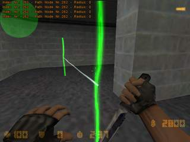
A 1-Way Connection
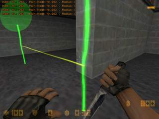
A 2-Way Connection
The "pathwaypoint delete x" command is
just like
the "add" command except that it removes a path (connection)
from the
starting point to the ending point. This is necessary in some cases
where
you may have a door that opens from one side and allows you to go through
but once the door closes you can't go back through the other way.
When adding waypoints use the pathwaypoint feature to
verify that waypoints
are actually reachable. Sometimes you add a waypoint and it appears
close
enough and it also appears to be in plain sight, but the Half-Life engine
doesn't indicate that the waypoint is "reachable".
Be sure to check this in BOTH directions when defining a waypoint
path.
Usually you don't have to be too careful about waypoint
placement, but in some situations, you may have to spend more time carefully
laying out waypoints to get them to be "reachable" (ladders
are a good
example).
To set crouch waypoints, simply crouch when adding the
waypoint. You will
notice that the waypoint line is shorter than a normal waypoint. Bot
will
crouch automatically when approaching a crouch waypoint (if it's not
a
camping waypoint).
Try placing waypoints at intersections in hallways (do
use some
"important" waypoints at crossings). Try not to place waypoints
in
places where the bots would bump into corners of walls or other obstacles
when trying to get from one waypoint to the next. Remember the bots
won't
always take what you consider to be the "obvious" choice when
choosing the
next waypoint. Try to limit the choices that they have to keep them
from
heading off in the wrong direction. Also remember that the Bots could
go
backward in a fight and might not find a waypoint. In that special case
they wouldn't find a near enough waypoint (they only search in-between
200 Units) and get stuck forever. Since V1.4 it's important to have
a lot
of waypoints together to allow the Bots a wider choice. Also put some
waypoints in corners or behind walls/doors so they can take good cover
positions. The Bots will try to take cover at waypoints
- not seen by the enemy and
- the one with the smallest wayzone radius in their range
4. What are the Wayzones ?
Bots will pick a point inside this radius for their destination
origin (based
on things like orientation etc.), this just makes movement not that
"static".
Ladder waypoints, camp waypoints and goal waypoints will always have
a radius
of 0. Don't try to change it ! After POD-Bot calculated all Zones you
should
walk all over your waypoints to verify that they are reachable within
their
radius. Try to be careful with the radius. If your path bends around
corners
it's better to lower the radius. You should set the radius to 0 if the
Path
goes through some narrow doorways or similar. You manually assign a
new value
by standing near to the waypoint and typing "waypoint setradius
x". Where x
is the value you want to assign. Valid ranges are 0-128. The bigger,
the wider
it is. You'll also notice, if you turned on pathwaypointing some lines
will
show you the radius of the actual waypoint (if it's not 0).
Some Tips & Tricks when creating waypoints:
I start by typing "waypoint on". After that I type
"autowaypoint on" and
"pathwaypoint on". Then I try to cover the map with
waypoints everywhere
I want the Bots to roam (except for ladder waypoints) and manually adjust
wayzone radii which aren't appropriate . After this I try to think of
the important points for each team. I move to that position, delete
the "normal" waypoint and instead set a strategical waypoint
at that position. Then I place the goal waypoints, rescue waypoints
(if needed) and ladder waypoints. Then I do a lot of test playing and
checking with 'debuggoal' until I'm finally satisfied with all of the
movement.
When saving and there are errors, the waypoint number with the error
will be shown to you. Use 'waypoint find x' where x is the number of
the waypoint you want to find. Green Beams will then show you the direction
to the waypoint if you previously turned on pathwaypoints. Type
'waypoint find -1' to turn it off. Another useful command for testing
waypoints is the debuggoal command. If you want to check out if Bots
will make it through a difficult route, save the waypoints, then load
them again and type debuggoal x, where x is again the number of the
waypoint. you want the Bot to reach. After that add 1 Bot to your team
and watch him move to that waypoint. Be sure to turn it off again for
real playing because otherwise all of the Bots would take this waypoint
as a goal.
There's no waypoint for shooting breakables. The Bots will automatically
shoot them if it's blocking their way, just make sure that the path
connection goes right through the breakable. There's also no button
waypoint. If a Bot sees a Button he will randomly try to press it. If
you want to make sure that the Bot uses the Button you could do tricky
waypoint connections leading towards the button.
Some common newbie mistakes:
Picture 1 - Placing unnecessary waypoints
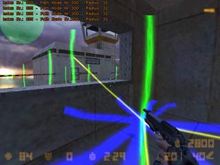
The waypoint in the middle of the window was probably set with the
intention to help the Bot with navigating through it. However it results
in the opposite. If the Bots have a clear Line of Sight to another waypoint
they assume there won't be any obstacle in the way. It would be better
to delete the waypoint in the window and just connect the waypoint in
front of the window with the one behind it.
Picture 2 - not fitting Wayzones
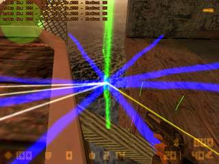
Look at that biiig wayzone assigned to this waypoint. If a Bot tries
to walk over this foot-bridge he will almost 100% fall down into death
because he would think even the free space beside it is walkable. For
precise movement a wayzone radius of 0 should be assigned instead.
Picture 3 - No connections between Waypoints, bad ladder waypoints
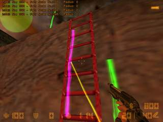
First, the connection from the normal waypoint isn't the best. It is
better to have the angle of approach set in a more straight angle. But
the really bad error is that there's probably no connection from the
ladder waypoint to the normal waypoint above. Let's take a look down
from the upper waypoint:
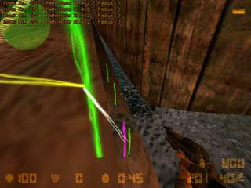
Yes. It's even worse. There's a one-way connection from the upper waypoint
to the ladder waypoint (at an angle where the Bot won't use the ladder
resulting in broken legs), there's no connection from the ladder waypoint
to the top and worst of all would be the only Path Bots could take to
reach this position. Playing with such waypoints would result in Bots
circling around a single waypoint just because the waypointer forgot
about connecting them. Simply manually connecting the ladder waypoint
with the top waypoint would get rid of the problem.
Picture 4 - Wrong Placement of Important Waypoints
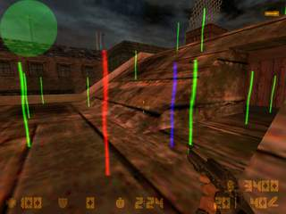
Now look at this. Isn't it funny how peacefully the Terrorist Important
Waypoint, the CT Important Waypoint and the Normal Waypoint co-exist
at the same place ? NO, it's not!
This map - cs_galleon - is a hostage map where the Terrorist Team
starts on the ship and the Counter-Terrorists Team spawn somewhere else
outside the ship. Having both of the Important Points at the same place
screws up all tactical reasoning the Bots do and will just result in
Deathmatch Gameplay (if there even will be gameplay then). So the CT
Important Waypoint should be deleted and be recreated at the CT Spawn
Area or in the near of it. In addition the CT Waypoint and the normal
waypoint are much to close together. More about this below...
Picture 5 - Bad approach angles for Ladder Waypoints
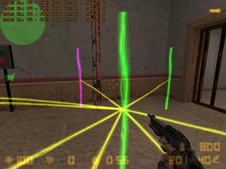
The normal waypoint in the front is connected with the ladder waypoint
in the background at an angle that the Bots will almost everytime run
either into the back of the ladder or collide with the side of it. To
make it even worse the normal waypoint on the right is also connected
with the ladder waypoint (you can't see it on the picture) so the Bots
will get stuck everytime they want to use the ladder (they don't know
how to manoever around backsides of ladders).. Luckily there is a button
at the left of the picture so if the Bot heads off to press it, there's
a chance he will approach the ladder from a better side. The problem
could easily be solved by deleting the connection from the waypoint
on the right side to the ladder and by moving the front waypoint a short
distance to the left.
Picture 6 - Waypoints too close together
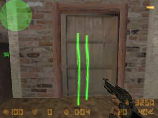
Besides that two waypoints at this close distance are absolutely unnecessary,
it will slow down the Bot (because of the higher amount of waypoints)
and furthermore will do no good to the Bots Navigation and Collision
Avoidance. I'll try to explain:
The Bots have a hardcoded radius inside my DLL where the Bot thinks
he reached this precious waypoints. It differs between types of waypoints,
to stay at the example picture normal waypoints are considered to be
reached when the Bot is inside a radius of 50 Units from the center
of the waypoint. To see what I mean with 50 Units you could set a waypoint
to a 50 Unit Wayzone by typing 'wayzone setradius 50'. Now in the example
picture the distance between the 2 waypoints is way below it, at a rough
guess I would say 16 Units. So what ? If the Bot reaches Waypoint Nr.
1, he automatically thinks (in the same frame) he has reached Waypoint
Nr. 2 without any movement which obviously is bad for precise movement.
Furthermore I'm post-processing the paths of the Bots so when 2 Bots
have the same waypoint as a goal I try to find alternative waypoints.
So if a colliding Bot #1 wants to reach Waypoint Nr. 1, Waypoint Nr.
2 will be a assigned to Bot #2 which leads to the Bots getting stuck
in each other very often. Avoid something like this at all costs!
Picture 7 - No Waypoints at all !
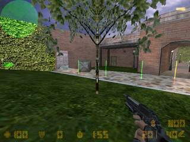
I can imagine looking at this scenario that the waypointer thought
something like this: "Oh well, these Bots are waypointed and I
don't want them to move here so I just don't set waypoints here and
everything's fine". This is wrong! It's true that POD-Bot
uses waypoints for basic movement so the Bots normally should never
reach this position in their normal navigation. But it's totally different
when engaged in combat ! If a Bot is attacking/fleeing an enemy he doesn't
use waypoints but uses an unwaypointed navigation like Realbot for example.
So it could easily be the case that a Bot is engaged at a position where
waypoints are available, moves backwards while fighting the enemy, finally
kills his enemy and stands at the position where I took the screenshot.
Now the Bot wants to switch back to waypointed movement but can't find
a waypoint in the near distance and is stuck forever again. So a basic
rule would be to place waypoints even in areas where you doubt a Bot
will ever move to, you never know what could happen in combat!
Phew ! I hope I didn't miss anything. Remember: the better
the waypoint file,
the more fun it is to play with the Bots ! If they are stuck somewhere
on
a map, it's usually the fault of the waypoint file creator...
If you've got questions not answered here, please use
the waypoint forum at nuclearbox:
http://www.nuclearbox.com/ubb/cgi-bin/ultimatebb.cgi?ubb=forum&f=5
Happy Waypointing !
|